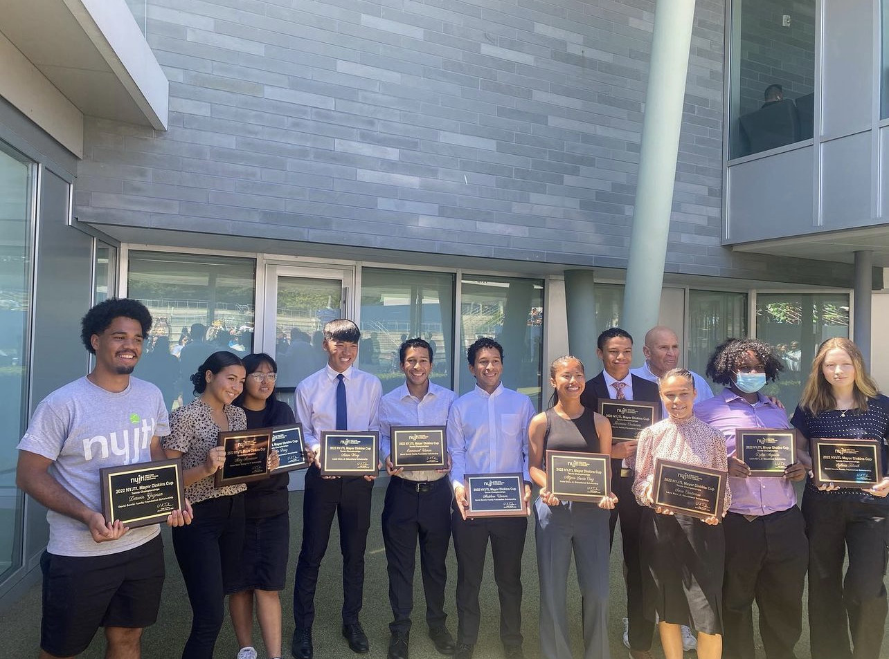

My name is Emmanuel Usman, I am a student at Rensselaer Polytechnic Institute dual majoring in Computer Science and ITWS (Information Technology & Web Sciences). I come from a hispanic background (parents from Colombia).
I was born and raised in Queens, New York and moved to my current hometown Yonkers, New York. I went to Aviation Career & Technical Highschool located in Long Island City. My family is from Cali, Colombia and moved here in 1999. I was born soon after in Elmhurst Hospital located in Jackson Heights in february 12, 2004.
My main goal is to get my degree and make a good amount of money to support my family. My family is pretty big. I have 3 brothers and 1 sister. Another goal of mine would be to help my twin brother afford his tuition. He is in Stony Brook Right now and is trying to get into med school. I know that his career path will be expensive so I agreed to pay my own tuition so that my family can pay his. I would like to help him out after I gradutate and land a good job so that my brother can study comfortably without worrying about money. Aside from that I just would like to retire early and explore the world as much as I can.
I am a huge fan of playing tennis. My tennis journey started when I was 15. I had recently moved to Yonkers,NY and was getting bored of playing video games. In Yonkers there were a lot of tennis courts so me and my brother started playing tennis over the summer for fun. Eventually, me and my brother started getting competetive and quickly the sport became an obsession. My brother and I then enrolled in a non-profit tennis program called NYJTL. Here there were coaches teaching tennis to local communities for free. We practiced with other players for some time and then the pandemic hit which allowed me and my brother to play even more. Over that era we were playing around 5-8 hours of tennis a day and trying to learn as much as possible as quickly as possible to make our highschool tennis team. We made the team, continued training with NYJTL and eventually I became captain of the tennis team at my school and played tournaments on the weekends. After training with NYJTL for a couple years they offered to train me to be a coach for them. I took that offer and now work part time in the summer teaching at summer camps, NYJTL and also teaching clients privately. Towards the end of my senior year, I was rewarded the NYJTL & David Gavrin Family Foundation Scholarship. I am now a part of the club tennis team at RPI and also a USTA Eastern (United States Tennis Assosiation) adult ambassador.
When I came to RPI, I never thought I would join a fraternity but lone behold I am now very involved in greek life. I am now Vice-president of TKE and I have had a blast. I decided to join TKE because the values of this fraternity really spoke to me. The fraternity's mission is to provide a unique experience which creates better men. This really spoke out to me and I can attest that being a part of Tau Kappa Epsilon has aided me in my development. It also has an admirable mission which is to fundraise for st. Jude Childrens Hospital. My cousin died from cancer so working to help families afford treatment is important to me.